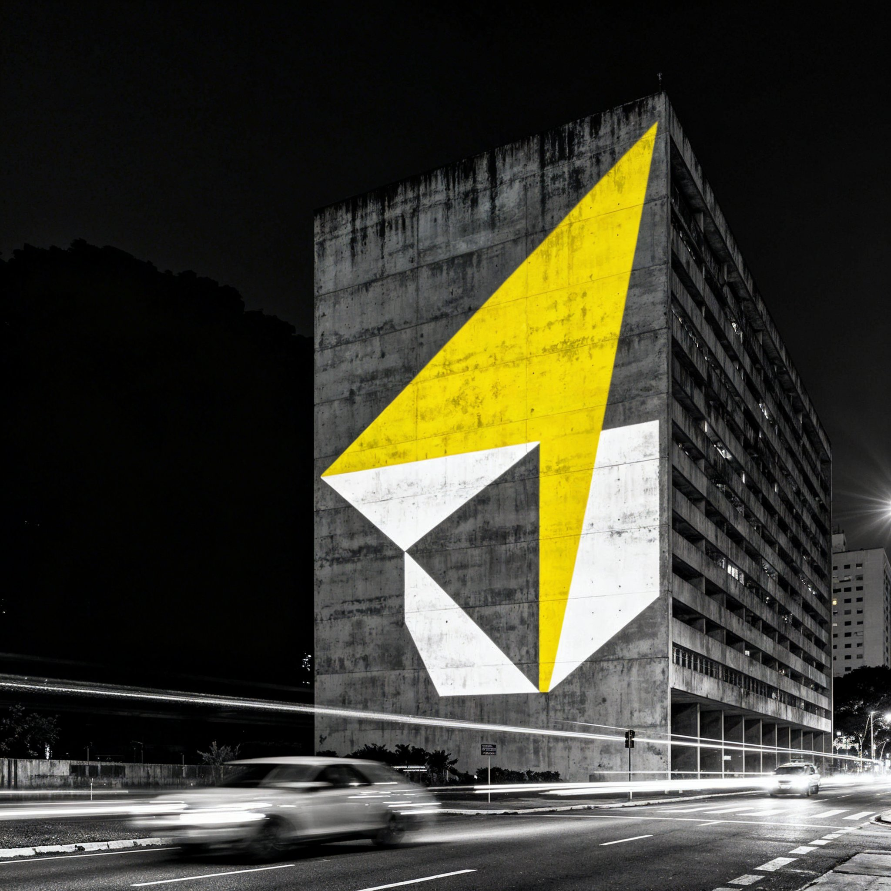
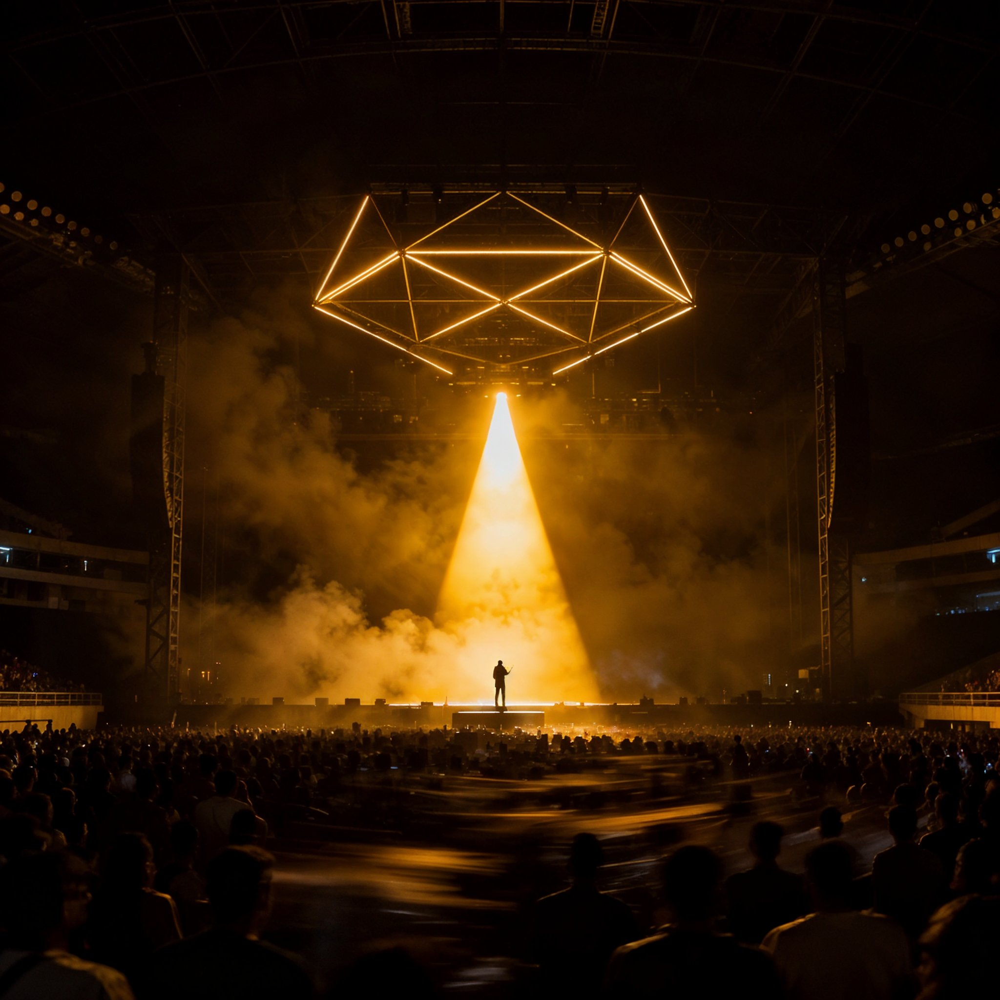

ADA — Manual de Marca · Seção 05
Linguagem Imagética
Cinco territórios visuais · Tratamento fotográfico · Aplicação do logo · Banco de prompts Freepik
01 — Conceito
A ADA não usa o Brasil como tema.
Usa como ponto de partida para chegar a qualquer lugar.
Usa como ponto de partida para chegar a qualquer lugar.
Os cinco territórios visuais são os mundos onde a ADA operou de verdade. São Paulo, natureza brasileira, código, palco, geometria — não são referências estéticas abstratas. São os lugares onde o trabalho aconteceu. A imagem é a prova.
O que une os cinco territórios
→Fundo escuro dominante — o preto é sempre o contexto
→Um único acento de luz — o amarelo como sinal
→Complexidade visual — sem simplicidade decorativa
→Tensão entre orgânico e técnico
→Grain cinematográfico — imagem viva, não polida
O que nunca entra
×Fundo branco ou claro como campo da imagem
×Estética stock photo — naturalidade encenada
×Paleta colorida sem ancoragem no escuro
×Pessoas identificáveis em destaque
×Imagens genéricas de "tecnologia" ou "criatividade"
02 — Os cinco territórios
Território 01
Urbano · São Paulo
São Paulo como campo de operação. Brutalism arquitetônico, luz artificial cortando a névoa, a cidade como sistema. Referência direta: Avenida Paulista, Virada Cultural, mapeamentos em fachadas.
Território 02
Natural · Natureza Brasileira
Natureza como sistema de informação — redes de galhos como estruturas de dados, luz penetrando camadas, complexidade orgânica. Referência: ALL Amazônia Times Square, jantar COP28 Dubai, Natura Belém.
Território 03
Técnico · Código e Dados
A tecnologia como matéria-prima visual. Placas de circuito, trilhas de dados, código como textura. A origem do trabalho do Caio: linguagem computacional tornada imagem.
Território 04
Performance · Palco
O palco como campo de operação — onde o trabalho da ADA tem escala máxima. Racionais MCs, Liniker, Natiruts, Encontro dos Titãs. Luz ao vivo como pintura.
Território 05
Abstrato · Geometria e Luz
O campo visual do KV levado ao extremo — o símbolo A em decomposição, linhas de força, partículas. Este território é o mais próximo da identidade pura do estúdio: onde o sistema da marca e a imagem se fundem.
Território 06
Em breve
Território reservado para projetos autorais futuros.
03 — Moodboard
Colagem visual dos cinco territórios.


03 — Tratamento fotográfico
Qualquer imagem que entre no sistema passa por este processo.
Contraste
→Sombras no preto absoluto
→Altas luzes controladas
→Grain cinematográfico
→Subexposição como ponto de partida
Paleta
→Dessaturação total com resgate seletivo
→Temperatura fria nas sombras
→Único amarelo: #FFD600 — nunca laranja
×Dois acentos de cor simultâneos
Composição
→Sujeito nunca centralizado
→10% nas bordas sem elemento crítico
→Logo sempre em área de baixo contraste
×Imagem cheia sem espaço para logo
04 — Aplicação do logo sobre imagem
Três posicionamentos válidos. O logo sempre vence a imagem — nunca some nela.

ANTES DO HYPE.
Centro · lock-up completo
ANTES DO HYPE.
Rodapé esquerdo · inline

Canto superior · símbolo isolado
05 — Cartazes · placeholders de imagem
Mockups com posicionamento real do logo. As imagens entram nos placeholders cinzas quando geradas.
Vertical A3 · Lock-up centro

ANTES DO HYPE.
Horizontal 16:9 · Lock-up rodapé esquerdo

ANTES DO HYPE.
Instagram · Lock-up centro inferior

Instagram · Meia-noite · Símbolo inferior direito
Instagram · Inversão amarelo · Sem imagem
07 — Assets para download · Originais
44 imagens disponíveis para download direto. Resolução original.


{kind=link}
{kind=link}
{kind=link}
{kind=link}
{kind=link}
{kind=link}
{kind=link}
{kind=link}
{kind=link}
{kind=link}
{kind=link}
{kind=link}
{kind=link}
{kind=link}
{kind=link}
{kind=link}
{kind=link}
{kind=link}
{kind=link}
{kind=link}
{kind=link}
{kind=link}
ADA · Manual de Marca · Seção 05 / 11
Linguagem Imagética · v1.0 · Mar 2026